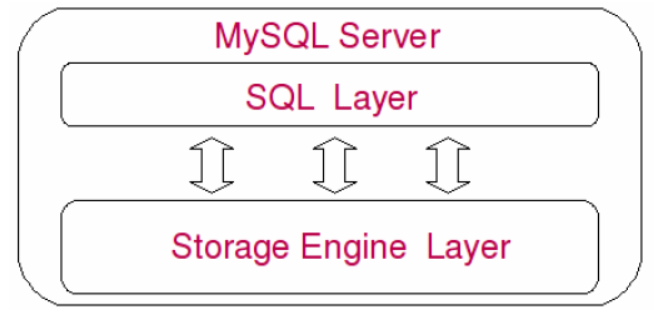

日志文件
1.错误日志：error log
错误日志记录了mysql server运行过程中所有较为严重的警告和错误信息，以及mysql server每次启动和关闭的信息。默认是关闭的，开启错误日志记录功能，需要启动时开启--log-error选项，错误日志默认存放在数据目录下，以hostname.err命名，可以使用命令：--log-error[=file_name]，修改其存放目录和文件名。
为方便维护，希望将错误日志内容备份并得闲开始记录，这时候可以用mysql的FLUSH LOGS命令来告诉mysqlt备份旧日志文件并生成新的日志文件。备份文件名以“.old”结尾。
2.二进制日志：binary log & binary log index
二进制日志就是binlog，通过--log-bin[=file_name]打开记录功能之后，mysql会将所有修改数据库数据的query以二进制形式记录到日志中。当然，日志中并不仅限于query这么简单，还包括每一条query执行的时间，所有消耗的资源，以及相关的事务信息，所以binlog是事务安全的。
binlog需要显式指定“--log-bin[=file_name]”才能开启，如果未指定file_name，则会在数据目录下记录为mysql-bin.xxxxxx(*代表0-99之间的某个数字，来表示该日志的序号。)
--max_binlog_size设置binlog的最大存储上限，当日志达到该上限时，mysql会重新创建一个日志开始继续记录。不过偶尔也会有超过该设置的binlog产生，一般都是因为即将到达上限时，产生了一个较大的事务，为了保证事务安全，mysql不会将同一个事务分开记录到两个binlog中。
--binlog-do-db=db_name参数明确告诉mysql，需要对某个（db_name）数据库记录binlog，如果有了“--binlog-do-db=db_name”参数的显式指定，mysql会忽略针对其它数据库执行的query，而仅仅记录针对指定数据库执行的query。
--binlog-ignore-db=db_name与--binlog-do-db=db_name完全相反，它显式指定忽略某个（db_name）数据库的binlog记录，当指定了这个参数后，mysql会记录指定数据库以外所有的数据库的binlog。
--binlog-ignore-db=db_name与--binlog-do-db=db_name两个参数有一个共同的概念需要搞清楚，参数中的db_name不是指query语句更新的数据所在的数据库，而是执行query的时候当前所处的数据库。不论更新哪个数据库的数据，mysql仅仅比较当前连接所处的数据库（通过use db_name切换后的数据库）与参数设置的数据库名，而不会分析query语句所更新数据所在的数据库。
mysql-bin.index文件（binary log index）的功能是记录所有的binary log的绝对路径，保证mysql各种线程能够顺利的根据它找到所有需要的binary log文件。
3.查询日志：query log
查询日志记录mysql中所有的query，通过“--log[=fina_name]”来打开该功能。由于记录了所有的query，包括所有的select，体积比较大，开启后对性能也有比较大的影响，所以请大家慎用该功能。一般只用于跟踪某些特殊的sql性能问题才会短暂打开该功能，默认查询日志文件名为hostname.log。
4.慢查询日志：slow query log
顾名思义，慢查询日志中记录的是执行时间较长的query，也就是我们常说的slow query，通过设--log-slow-querier[=file_name]来打开该功能并设置记录位置和文件名，默认文件名为hostname-slow.log，默认目录也是数据目录。
慢查询日志采用简单的文本格式，可以通过各种文本编辑器查看其中的内容。其中记录了语句执行时刻，执行所消耗的时间，执行用户，连接主机等相关信息。mysql还提供了专门用来分析慢查询日志的工具程序mysqlslowdump，用来帮助数据库管理人员解决可能存在的性能问题。
5.Innodb的在线redo日志：innodb redo log
Innodb是一个事务安全的存储引擎，其事务安全性主要是通过在线redo日志和记录在表空间中的undo信息来保证的，redo日志中记录了Innodb所做的所有物理变更和事务信息，通过redo日志和undo信息，Innodb保证了在任何情况下的事务安全性。Innodb的redo日志同样默认存放数据目录下，可以通过innodb_log_group_home_dir来更改设置日志的存放位置，通过innodb_log_files_in_group设置日志的数量。
数据文件
1.“.frm”文件
与表相关的元数据（meta）信息都存放在“.frm”文件中，包括表结构的定义信息等。不论是什么存储引擎，每一个表都会有一个以表名命名的“.frm”文件。所有的“.frm”文件都存放在所属数据库的文件夹下面。
2.“.MYD”文件
“.MYD”文件也是专属于MyISAM存储引擎的，主要存放MyISAM表的数据。每一个MyISAM表都会有一个“.MYD”文件与之对应，同样存放于所属数据库文件夹下，和“.frm”文件一起。
3.“.MYI”文件
“.MYI”文件也是专属于MyISAM存储引擎的，主要存放MyISAM表的索引相关信息。对于MyISAM存储来说 ，可以被cache的内容主要就是来源于“.MYI”文件中。每一个MyISAM表对应 一个“.MYI”文件，存放于位置和“.frm”和“.MYD”一样。
4.“.ibd”文件和ibdata文件
这两种文件都是存放Innodb数据的文件，独享表空间存储方式使用“.idb”文件来存放数据，且每个表一个“.ibd”文件。共享存储表空间来存放数据，则会使用ibdata文件来存放，所有表共同使用一个（或者多个，可自行配置）ibdata文件。ibdata文件可以通过innodb_data_home_dir和innodb_data_file_path两个参数共同配置组成，innodb_data_home_dir配置数据存放的总目录，而innodb_data_file_path配置每一个文件的名称。也可以直接在innodb_data_file_path使用绝对路径来完成配置。innodb_data_file_path中可以一次配置多个ibdata文件。文件可以是指定大小，也可以是自动扩展的，但是Innodb限制了仅仅只有最后一个ibdata文件能够配置成自动扩展类型。当我们需要添加新的ibdata文件的时候，只能添加在innodb_data_file_path配置最后，而且必须重启mysql才能完成ibdata的添加工作。
Replication文件
1.master.info文件：
master.info文件存在于slave端的数据目录下，里面存放了该slave的master端的相关信息，包括master的主机地址，连接用户，连接密码，连接端口，当前日志位置，已经读到的日志位置信息。
2.relay log和relay log index
mysql-relay-bin.xxxxxx文件用于存放slave端的I/O线程从master端所读取到的binary log信息，然后由slave端的sql线程从该relay log中读取并解析相应的日志信息，转化成master所执行的sql语句，然后在slave端应用。
mysql-relay-bin.index文件的功能类似于mysql-bin.index，同样是记录日志的存放位置的绝对路径，只不过他所记录的不是binary log，而是relay log。
3.relay-log.info文件
类似于master.info，它存放通过slave的I/O线程写入到本地的relay log的相关信息。供slave端的sql线程以及某些管理操作随时能够获取当前复制的相关信息。
其他文件
1.system config file
mysql的系统配置文件一般都是“my.cnf”，Unix/Linux下默认存放在“/etc”目录下，Windows环境一般存放在“c:/windows”目录下面。my.cnf文件中包含多种参数选项组，每一种参数组都通过中括号给定了固定的组名，如“[mysqld]”组中包括了mysqld服务启动时候的初始化参数，“[client]”组中包含着客户端工具程序可以读取的参数，此外还有其他针对各个客户端软件的特定参数组，如mysql程序使用“[mysql]”，mysqlchk使用的“[mysqlchk]”，等等。
2.pid file
pid file是mysqld应用程序在Unix/Linux环境下的一个进程文件，和许多其他Unix/Linux服务端程序一样，存放着自己的进程id。
3.socket file
socket文件也是在Unix/Linux环境才有的，用户在Unix/Linux环境下客户端连接可以不通过TCP/IP网络而直接使用Unix Socket来连接mysql。
mysql系统架构
逻辑模块组成
mysql可以看成是二层架构，第一层是SQL layer，在mysql数据库系统处理底层数据之前的所有工作都是在这层完成的，包括权限判断，sql解析，执行计划优化，query cache的处理等；第二层是存储引擎层（storage engine layer），也就是底层数据存取操作实现部分，由多种存储引擎共同组成。

SQL Layer中包含多个子模块：
1.初始化模块
顾名思义，初始化模块就是在mysql server启动的时候，对整个系统做各种各样的初始化操作，比如各种buffer，cache结构的初始化和内存空间的申请，各种系统变量的初始化设定，各种存储引擎的初始化设置，等。
2.核心API
核心API模块主要是为了提供一些需要非常高效的底层操作功能的优化实现，包括各种底层数据结构的实现，特殊算法的实现，字符串处理，数字处理等，小文件I/O，格式化输出，以及最重要的内存管理部分。核心API模块的所有源代码都集中在mysys和strings文件夹下面。
3.网络交互模块
底层网络交互模块抽象出底层网络交互所使用的接口api，实现底层网络数据接收与发送，以方便其他和模块调用，以及对这部分的维护。
4.Client & Server交互协议模块
任何C/S结构的软件系统，都肯定有自己独有的信息交互协议，mysql也不例外。mysql的Client & Server交互协议模块部分，实现了客户端与mysql交互过程中的所有协议。当然这些协议都是建立在现有的os和网络协议之上的，如TCP/IP以及Unix Socket。
5.用户模块
用户模块所实现的功能，主要包括用户的登录连接权限控制和用户的授权管理。
6.访问控制模块
访问控制模块实现的功能就是根据用户模块中各用户的授权信息，以及数据库自身特有的各种约束，来控制用户对数据的访问。用户模块和访问控制模块两者结合起来，组成了mysql整个数据库系统的权限安全管理的功能。
7.连接管理、连接线程和线程管理
连接管理模块负责监听对mysql server的各种请求，接收连接请求，转发所有连接请求到线程管理模块。每一个连接上的mysql server的客户端请求都会被分配（或创建）一个连接线程为其单独服务。而连接线程的主要工作就是负责mysql server与客户端的通信，接受客户端的命令请求，传递server端的结果信息等。线程管理模块则负责维护这些连接线程。包括线程的创建，线程的cache等。
8.query解析和转发模块
在mysql中我们习惯所有Client端发送给Server端的命令都称为query，在mysql server里面，连接线程接收到客户端的一个query后，会直接将该query传递给专门负责将各种query进行分类然后转发给各个对应的处理模块，这个模块就是query解析和转发模块。其主要工作就是将query语句语义和语法的分析，然后按照不同的操作类型进行分类，然后做出会对性的转发。
9.Query Cache模块
Query Cache模块在mysql中是一个非常重要的模块，他的主要功能是将客户端提交给mysql的select类query请求的返回结果集cache到内存中，与该query的一个hash值做一个对应。该Query所取数据的基表发生任何数据变化后，mysql会自动使该query cache失效。在读写比例非常高的应用系统中，query cache对性能的提高是非常显著的。当然它对内存的消耗也是非常大的。
10.Query优化器模块
Query优化器，就是优化客户端请求的query，根据客户端请求的query语句，和数据库中的一些统计信息，在一系列算法的基础上进行分析，得出一个最优的策略，告诉后面的程序如何取得这个query语句的结果。
11.表变更管理模块
表变更管理模块主要是负责完成一些DML和DDL的query，如：update，delte，insert，create table，alert table等语句的处理。
12.表维护模块
表的状态检查，错误修复，以及优化和分析等工作都是维护模块需要做的事情。
13.系统状态管理模块
系统状态管理模块负责在客户端请求系统状态的时候，将各种状态数据返回给用户，像DBA常用的各种show status，show variables等，所得到的结果都是由这个模块返回的。
14.表管理器
表管理器主要维护每一个mysql表的定义文件，也就是*.frm文件，以及一个cache，该cache中的主要内容是各个表的结构信息。此外它还维护table级别的锁管理。
15.日志记录模块
日志记录模块主要负责整个系统级别的逻辑层的日志的记录，包括error log，binary log，slow query log等。
16.复制模块
复制模块又可分为master模块和slave模块两部分，master模块主要负责在replication环境中读取master端的binlog日志，以及与slave端的I/O线程交互等工作。slave模块有两个线程，一个是负责从master请求和接受binary日志，并写入本地relay log中的I/O线程。另一个是负责从relay log中读取相关日志事件，然后解析成或以在slave端正确执行并得到和master端完全相同的结果的命令并再交给slave执行的sql线程。
17.存储引擎接口模块
存储引擎接口模块在mysql中实现底层数据存储引擎的插件式管理，这个模块实际中是一个抽象类，但正是因为它成功将各种数据处理高度抽象化，才成就了今天mysql可插排拔存储引擎的特色。
各模块工作配合

我们通过启动mysql，客户端连接，请求query，得到返回结果，最后退出，这样一整个过程来进行分析。
当我们执行启动mysql命令之后，mysql的初始化模块就从系统配置文件中读取系统参数和命令行参数，并按照参数来初始化整个系统，如申请并分配buffer，初始化全局变量，以及各种结构等。同时各个存储引擎也被启动，并进行各自的初始化工作。当整个系统初始化结束后，由连接管理模块接收。连接管理模块会启动处理客户端连接请求的监听程序，包括tcp/ip的网络监听，还有unix的socket。这时候，mysql server就基本启动完成。准备好接受客户端请求了。
当连接管理模块监听到客户端的连接请求（借助网络交互模块的相关功能），双方通过Client & Server交互协议模块所定义的协议“寒暄”几句后，连接管理模块就会将连接请求发给线程管理模块，去请求一个连接线程。
线程管理模块马上又会交控制交给连接线程模块，告诉连接线程模块：现在我这边有连接请求过来，需要建立连接。连接线程模块在接到请求后，首先会检查当前连接线程池中是否有被cache的空闲连接线程，如果有，就取出一个和客户端请求连接上，如果没有空闲的连接线程，则建立一个新的连接线程与客户端请求连接。当然，连接线程模块并不是在收到连接请求后马上就会取出一个连接线程和客户端连接，而是首先通过调用用户模块进行授权检查，只有客户端请求通过了授权检查后，他才会将客户端请求和负责请求的连接线程连上。
在mysql中，将客户端请求分为了两种类型：一种是query，需要调用Parser也就是Query解析和转发模块解析才能够执行的请求；一各是command，不需要调用Parser就可以直接执行的请求。如果我们的初始化配置打开了Full Query Logging的功能，那么Query解析与转发模块会调用日志记录模块将请求计入日志，所以出于性能考虑，一般很少打开full query logging的功能。
当客户端请求和连接线程“互换暗号（互通协议）”接上头之后，连接线程就开始处理客户端发送过来的各种命令（或者query），接受相关请求。它将收到的query语句转给Query解析和转发模块，Query解析器先对Query进行基本的语义和语法解析，然后根据命令类型不同，有些会直接处理，有些会分发给其他模块处理。
如果是一个Query类型的请求，会将控制权交给Query解析器。Query解析器首先分析看是不是一个select类型的query，如果是，则调用查询缓存模块，让它检查该query在query cache中是否已经存在。如果有，则直接将cache中的数据返回给连接线程模块，然后通过与客户端的连接线程将数据传输给客户端。如果不是一个可以被cache的query类型，或者cache中没有该query的数据，那么query将继续传回query解析器，让query解析器进行相应处理，再通过query颁发器分发给相关处理模块。
如果解析器解析结果是一条未被cache的select语句，则将控制权交给Optimizer，也就是Query优化器模块，如果是DML或者DDL语句，则会交给表变更管理模块，如果是一些更新统计信息、检测、修复和整理类的query则会交给表维护模块去处理，复制相关的query则转交给复制模块去进行相应的处理，请求状态的query则转交给状态收集报告模块。实际表变更管理模块根据所对应的处理请求的不同，是分别由insert处理器、delete处理器、update处理器、create处理器，以及alert处理器这些小模块来负责不同的DML和DDL的处理。
在各个模块收到Query解析与分发模块分发过来的请求后，首先会通过访问控制模块检查连接用户是否有访问目标表以及目标字段的权限，如果有，就会调用表管理模块请求相应的表，并获取对应的锁。表管理模块首先会查看该表是否已存在于table cache中，如果已经打开则直接进行锁相关的处理，如果没有在cache中，则需要再打开表文件获取锁，然后将打开的表交给表变更管理模块。
当表变更管理模块“获取”打开的表之后，就会根据该表的相关meta信息，判断表的存储引擎类型和其他相关信息。根据表的存储引擎类型，提交请求给存储引擎接口模块，调用对应的存储引擎实现模块，进行相应处理。
当一条query或者一个command处理完成（成功或失败）之后，控制权都会交还给连接线程模块。如果处理成功，则将处理结果（可能是一个Result set，也可能是成功或者失败的标识）通过连接线程反馈给客户端。如果处理过程中发生错误，也会将相应的错误信息发送给客户端，然后连接线程模块会进行相应的清理工作，并继续等待后面的请求，重复上面提到的过程，或者完成客户端断开连接的请求。
如果在上面的过程中，相关模块使数据库中的数据发生变化，而且mysql打开了binlog功能，则对应的处理模块还会调用日志处理模块将相应的变更语句以更新事件的形式记录到相关参数指定的二进制日志文件中。
在上面各个模块的处理过程中，各自的核心运算处理功能部分都会高度依赖整个mysql的核心API模块，比如内存管理，文件I/O，数字和字符串处理等。